Logging không hề đơn giản
Mình thấy hiện nay, rất nhiều dev khi code bỏ quên một thứ quan trọng, logging! Log để làm gì? Log như thế nào, đó là cả một câu chuyện dài
Log để làm gì?
Với comment, naming method, variable, field và class, ta giúp code dễ hiểu hơn, tránh những nhầm lẫn trong quá trình code, nhưng với logging, ta hiểu được chương trình trong quá trình chạy. Đoạn mã này trả về giá trị gì, đối số này thay đổi ra sao xuyên suốt một loạt các tiến trình, hay config của mình đã đúng chưa. Việc logging là rất quan trọng.
Đáng tiếc thay, rất nhiều bạn cho rằng Debugging đã là quá đầy đủ và chi tiết. Tuy nhiên, debugging chỉ giải quyết cho chính bạn và chính thời điểm đó mà thôi. Sẽ ra sao nếu người khác cần kiểm tra lại, do miss specs hoặc có lỗi phát sinh, họ sẽ phải debug lại hoàn toàn. Trên thực tế, đã có không dưới chục lần mình đã phải sửa code, thêm đoạn code trên server chỉ để hiểu tại sao trên server lại lỗi, còn dưới máy mình thì không. Cái tội không ghi log.
Giật mình hơn rất nhiều, nhiều bạn biết log, nhưng lại log bằng System.out.println. Trời đất, đây là Java chứ có phải Javascript đâu, quên console.log đi!
Log level
Ở trạng thái production, logging đáng lý phải không được làm ảnh hưởng(nhiều) đến performance của hệ thống. Đó là lý do họ phát mình ra Log Level (System.out.println thì không có level). Mình cũng không hay dùng nhiều level, nhưng thường dùng nhất:
- Error: log mọi thứ nguy hiểm nhất, thường là trong lệnh try-catch
- Info: log mọi thứ mà mình nghĩ là tất cả mọi người đều nên biết
- Debug: log những thứ chi tiết nhất, như record lấy ra từ database như thế nào, list này có những phần tử ra sao. Nói chung, sẽ log ra những thông tin mà nhìn vào là thấy mà không cần phải dùng debugging.
Lỗi mà nhiều bạn hay gặp là:
- Không log error. Lệnh catch để không, đôi khi nhìn thấy Exception cũng không dễ để hiểu cái gì gây ra lỗi. NullPointerException? Quá nhiều thứ có thể gây ra lỗi này, nếu có thể log một dòng cỏn con nêu ra cái gì null thì sẽ dễ thở hơn cho người khác rất nhiều.
- Không log debug. ok, đã nói ở trên
- Cái gì cũng log info. Bạn đã bao giờ thử đổi log level của Hibernate hay bất kỳ framework nào sang level DEBUG hay TRACE chưa? Nếu rồi, bạn sẽ thấy chương trình của bạn chậm một cách vô cùng khủng khiếp. Trên thực tế, logging có ảnh hưởng performance, và việc lựa chọn level là rất quan trọng.
Log sao cho hợp lý
Cùng đến với dòng log đầu tiên:
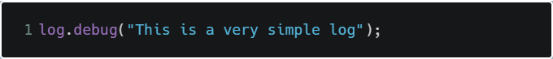
Hmm. Cũng có gì đâu. Phức tạp hơn chút:
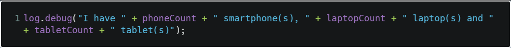
Ok. Mọi chuyện bắt đầu phức tạp rồi. Nhìn code có vẻ xấu. Có thể nhiều bạn biết, hoặc IDE gợi ý, Java có java.text.MessageFormat
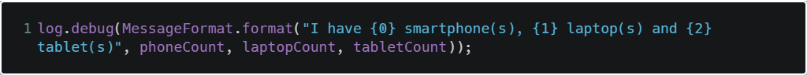
Trông cũng không đến nỗi tệ! Nhưng thật ra là có đấy. Nếu bạn có theo dõi bài này của mình, bạn sẽ biết là string composition là rất đắt giá, thậm chí MessageFormat còn tệ hơn rất nhiều. Sẽ ra sao nếu code của bạn có rất nhiều dòng log, và mỗi dòng log đều thực hiện cả tá string composition này.
Có bạn sẽ nói là ta có thể giới hạn log level, không để debug nữa, mà nếu để debug thì cũng chỉ là đang debug thôi, không đáng ngại.
Vấn đề là, dòng debug bạn vừa viết, có thể không được ghi ra console hay log file, nhưng, nó luôn luôn chạy, dù bạn để level là gì!
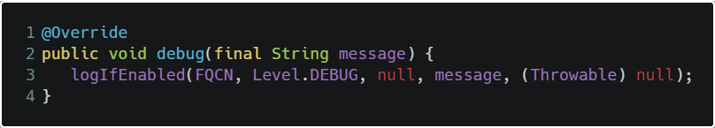
Đúng là nó logIfEnabled, chỉ log khi bạn enable, nhưng phần message, vẫn sẽ được execute.
May mắn là, họ có tận 2 cách để giải quyết.
Cách thứ nhất, dùng hàm log đi kèm parameter sẵn có trong API
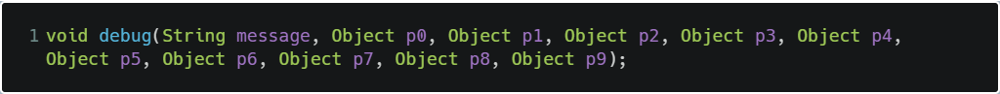
Bạn có số lượng parameter từ 1 đến 9, nếu bạn có 10 cái lận, bỏ bớt đi!
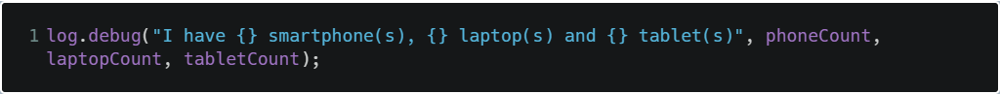
Trên thực tế thì họ cũng dùng MessageFormat ở bên trong thôi, vậy tại sao cái này lại hiệu quả hơn? Vì bạn nhìn xem, ở bên ngoài, mình chỉ thấy một constant string và một đống parameter, làm gì có cái string composition hay MessageFormat nào. Vấn đề được giải quyết.
Cách một khá hay, nhưng sẽ ra sao nếu parameter của mình là dynamic, hay là một block code rất nhiều dòng code

Nhìn xem, vẫn không có string composition nào cả, nhưng sẽ có một loạt method được gọi: getPhoneCount(), getLaptopCount(), getTabletCount(). Hoặc giả bạn muốn cả đoạn code này chỉ được thực hiện khi log ở mức debug
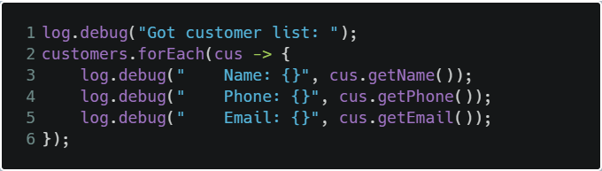
Đó là lý do bạn nên dùng cách thứ hai, dùng log.isDebugEnabled()
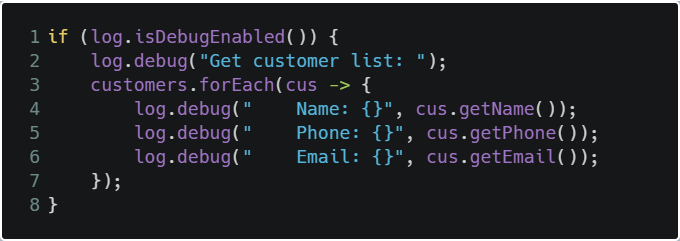
Rất đơn giản, kiểm tra xem log debug có đang được bật không, chỉ chạy code khi log debug được bật. Ngoài isDebugEnabled, bạn còn có isInfoEnabled, isTraceEnabled,… quá đủ cho bạn dùng.
Bạn sẽ thấy có rất nhiều thư viện, framework dùng đoạn code như trên, nhưng nay, nó đã không còn đúng và trở nên quá cồng kềnh và rối code.
Code của bạn sẽ rất dài, lằng nhằng và rối rắm (thừa nhận đi) và chỉ trong một method, sẽ có hàng tá đoạn bạn cần phải log debug, không phải chỉ một chỗ, mà chỗ này chỗ kia rất nhiều. Thử tưởng tượng, cứ mỗi lần cần log debug, bạn lại
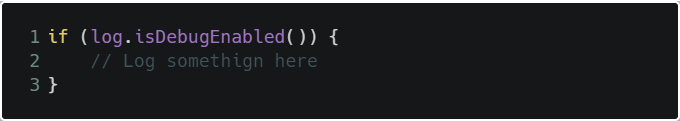
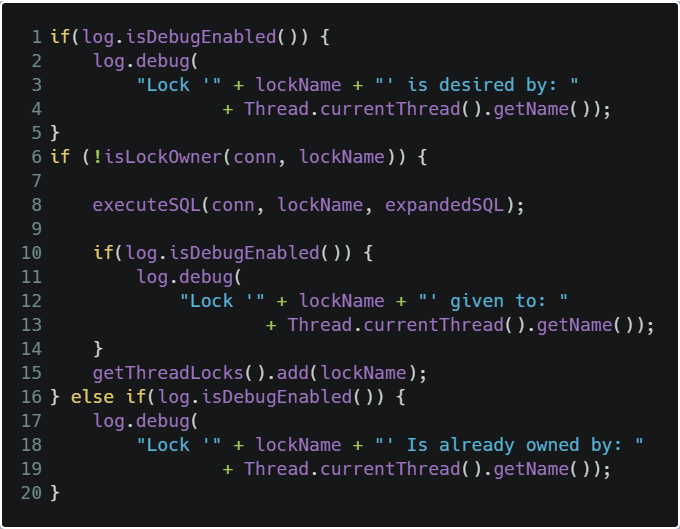
Bắt đầu không hợp lý rồi.
Ơn giời, lần đầu tiên trong đời mình thấy Java 8 đặc biệt hữu ích. Vận dụng Lambda expression và Function Interface trong Java 8, log4j đã thêm vào tính năng vô cùng hữu ích: Supplier. Tạm gọi đây là cách thứ 3
Ahh. Đừng làm gì nữa, nó ok rồi
Nhưng với đoạn code này
Thay vì dùng isDebugEnabled, bạn có thể viết
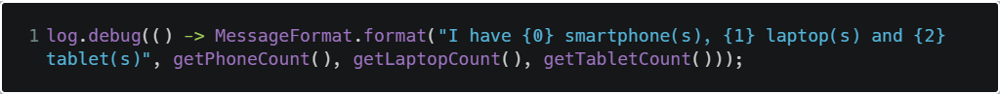
Chỉ một dấu nhỏ nhưng hiệu quả hơn rất nhiều. Bạn biết rằng Lambda expression có tác dụng gì không, chính là lazy đấy. Đoạn code bên trong, đoạn này nè
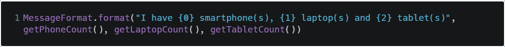
Sẽ không được thực thi nếu log debug không được enable.
Bạn thích như thế này
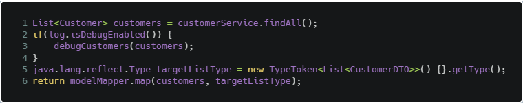
hay thế này hơn
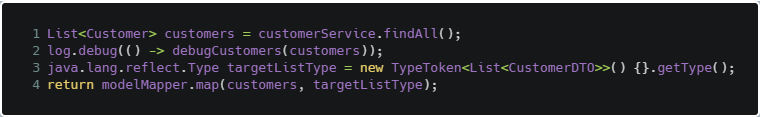
Nhiều khi, performance thay đổi có vẻ sẽ không có gì lớn lắm, nhưng performance chỉ nên đánh đổi với những thứ xứng đáng. Chỉ một thay đổi nhỏ nhưng vẫn đảng bảo performance, tại sao không nhỉ?